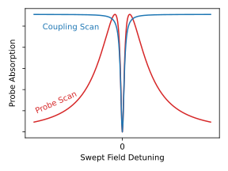
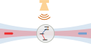
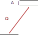
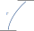

Modelling Multilevel Rydberg-Atom Electrometry
Modelling Multilevel Rydberg-Atom Electrometry
Modelling Multilevel Rydberg-Atom Electrometry
Rydberg Atom: easier to use 2 transitions

Scanning the coupling field isolates signal of interest
Electrometry: THz field splits EIT
Density matrix models are great for spectroscopy
Density matrix models are great for spectroscopy
\begin{equation} \frac{d\rho}{dt} = \frac{1}{i\hbar}\underbrace{\left[\hat{H}, \rho\right]}_\text{Driven Transitions} + \sum_i \Gamma_i \left(L_i\rho L_i^\dagger - \frac{1}{2}\left\{L^\dagger_i L_i, \rho\right\}\right) \end{equation}
\begin{equation} \hat{H} = \frac{\hbar}{2}\begin{bmatrix} 0 & \Omega_r & 0 & 0\\ \Omega_r & -2\Delta_r & \Omega_c & 0\\ 0 & \Omega_c & -2(\Delta_r + \Delta_c) & \Omega_\text{THz}\\ 0 & 0 & \Omega_\text{THz} & -2(\Delta_r + \Delta_c + \Delta_\text{THz}) \end{bmatrix} \end{equation}
\begin{equation} \frac{d\rho}{dt} = \frac{1}{i\hbar}\left[\hat{H}, \rho\right] + \sum_i \underbrace{\Gamma_i \left(L_i\rho L_i^\dagger - \frac{1}{2}\left\{L^\dagger_i L_i, \rho\right\}\right)}_\text{Decay Paths} \end{equation}
Steady-state solution:
Only representative of stationary (ultracold) atoms
Rydberg states have long lifetimes
Dominant Rydberg loss process is transit
Transit can be modelled by decay to Dummy state
Unfortunately, our beams are too focused to assume the transit rate gives the broadening
Measurements with real atoms can be complicated